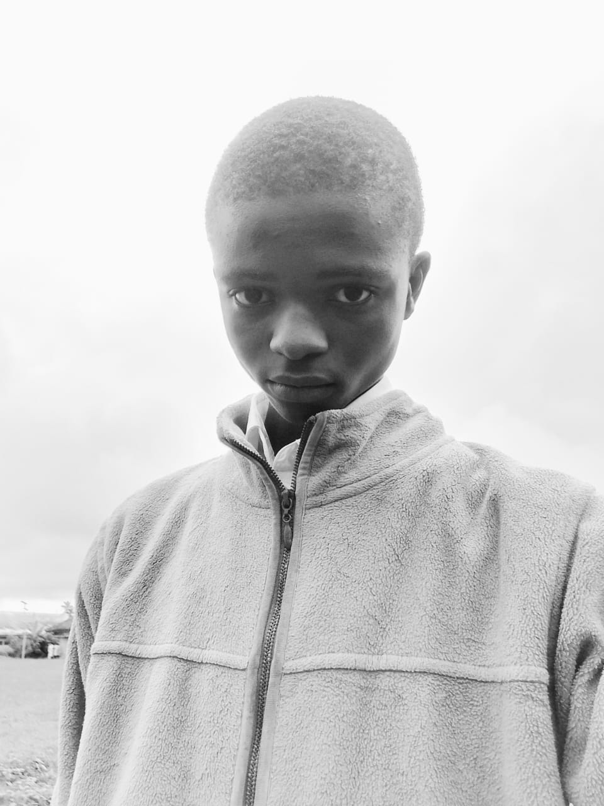

</>
HTML
Building the structure and content of web pages.
LEARNING & PRACTISINGSS3 STUDENT · NIGERIA · BUILDING MY FUTURE
I'm Abasi-isinke Mbat — an aspiring software engineer, beginner web developer, and STEM enthusiast interested in using technology to solve real problems.

“Turning ideas into technology that makes a meaningful difference.”
01 / A LITTLE ABOUT ME
I'm a Senior Secondary School 3 student in Akwa Ibom State, Nigeria, developing my skills in web design and technology one step at a time.
I enjoy learning how websites work, turning ideas into simple digital experiences, and exploring STEM concepts that could help people in everyday life. I'm still learning, and I believe in being honest about what I've built, what I'm practising, and what I want to improve.
My long-term goal is to study software engineering, pursue international learning opportunities, and create useful technology with a positive impact.
Let's connect ↗02 / MY TOOLKIT
Tools and subjects I'm learning or practising right now.
Building the structure and content of web pages.
LEARNING & PRACTISINGStyling layouts, colours, spacing, and responsive pages.
LEARNING & PRACTISINGBeginning to explore interactivity and web behaviour.
IN PROGRESSExploring visual design and digital graphics.
LEARNINGDeveloping document, spreadsheet, and productivity skills.
PRACTISINGResearching ideas that connect science and technology.
EXPLORING IDEAS03 / SELECTED WORK
A mix of web practice and STEM concepts, each part of my learning journey.

A proposed modular walkway exploring how footsteps might be converted into electricity for low-power school uses.
Explore the concept ↗This personal website is a hands-on project for practising HTML, CSS, responsive layouts, and presenting my work online.
You're viewing it ↗Project transparency: EcoGrid Pavement is currently a concept. It has not yet been built or tested.
04 / THE ROAD AHEAD
I'm focused on building a strong foundation before taking on bigger challenges.
Keep practising HTML and CSS, then steadily build confidence with JavaScript.
Build useful websites and continue researching STEM innovation ideas.
Work towards strong academic results and explore suitable fully funded scholarships.
05 / SAY HELLO
Interested in student innovation, web development, or learning opportunities? I'd be glad to connect.